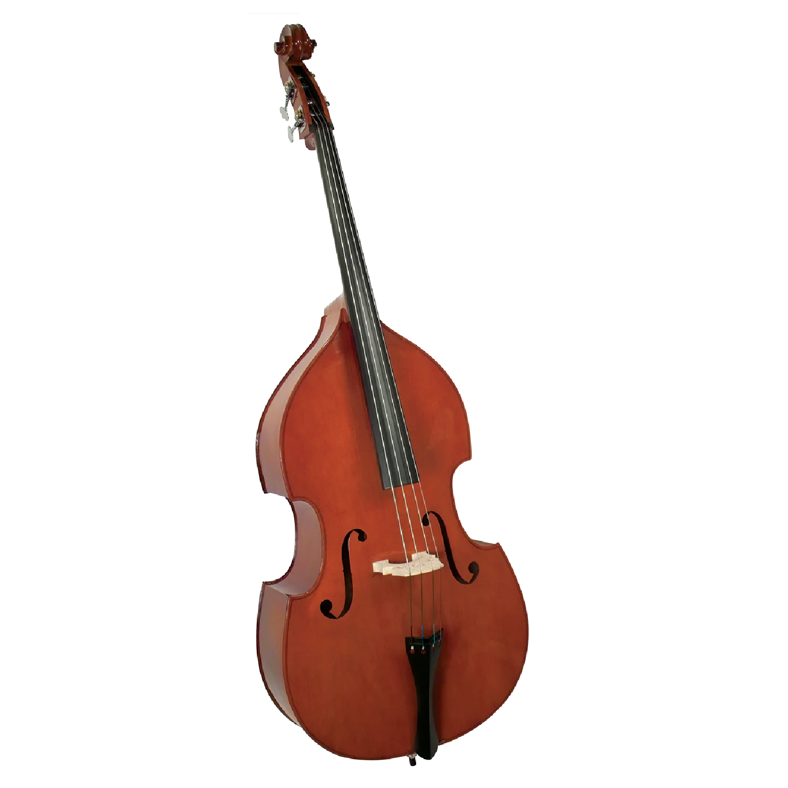

Cuerda Frotada
Violines
Fabricado a mano por el maestro luthier Marco Dotti en el taller de Edgar Russ en Cremona, siguiendo el modelo del violín construido por Guarneri del Gesu en el año 1742, cuyos propietarios anteriores fueron Ferdinand David de Leipzig y Jascha Heifetz.
Tapa realizada en madera de pícea spalted típicamente italiana procedente del Val di Fiemme
- Tapa realizada en madera de pícea spalted típicamente italiana procedente del Val di Fiemme
- Fondo de arce bosnio flameado, secado al aire
- Aros y mástil realizados en la misma madera que el fondo
- Diapasón realizado en madera de ébano de la mejor calidad
- Imprimación para madera a base de caseína y calcio
- Acabado lacado con una laca de ámbar/aceite de linaza preparada por el propio Edgar Russ, que se colorea con pigmentos para dar al instrumento un aspecto lacado fiel al original.

Violas
Modelo Cannone de Paganini, construido según el modelo del "Cannone" de Guarneri del Gesu, así llamado por Niccolo Paganini
- Tapa de pícea maciza
- Fondo de 2 piezas de arce flameado macizo
- Aros de arce flameado y mástil de arce flameado
- Diapasón de ébano
- Clavijero Bogaro & Clemente de madera de serpiente
- Cordal Bogaro & Clemente de madera de serpiente con silleta de madera de ébano y una afinaprima
- Fabricado por el maestro luthier Andrea Varazzani en Cremona (Italia)

Violonchelos
Del el maestro constructor de violines Thomas Stöhr (tres veces ganador del Premio Alemán de Instrumentos Musicales)
- Maderas tonales selectas secadas al aire en largo proceso en nuestro propio almacén de generaciones de maderas tonales
- Rango de graves cálido, voluminoso, lleno de fuerza y oscuro
- Cuerda La con un sonido vivo, abierto y melodioso, sin aspereza
- Muy fácil de tocar, el instrumento ofrece una respuesta muy ligera
- Ajuste individual de cuerdas para favorecer un desarrollo completo del sonido
- Sin notas lobo
- Incluye certificado de autenticidad

Contrabajos
Producido en Europa y ajustado en Alemania en el taller especializado del departamento de cuerdas de Four Seasons
- Contrabajo 4/4 con tapa de pícea maciza y fondo de arce macizo plano
- Diapasón de ébano redondeado
- Mecánicas tirolesas
- Pica ajustable en altura
- Longitud de escala cerca de 105 cm
